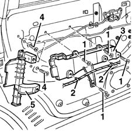

7010D22 rear side door descending window glass guide (one) - r r with door panel (and support frame) removed
- Path
- Procedures > 70 FITTINGS > 7010 PASSENGER COMPARTMENT REAR SIDE DOORS > 7010D rear side door window glasses > 7010D22 rear side door descending window glass guide (one) - r r with door panel (and support frame) removed
- Kind
- repair procedure (removal / refitting; the operation number is the code)
- Applies to
- all engines; all production periods
- Interactive page
- https://sloeber94.github.io/elrnDB-fMltpl/en/#/2892088
Applies to: all engines; all production periods
 Removing
Removing
 Refitting
Refitting7010A04 rear side door water guard protection - r r or arrange with door panel removed .
1. Undo the bolts.
2. Disconnect the wiring from the retainers.
3. Remove the bracket.
4. With the window fully raised, undo the bolts securing the window guide.
5. Remove the window guide.

Applies to: all engines; all production periods
Refitting
RemovingCheck that the guide is undamaged.
Fit the guide.
Tighten the bolts.
Fit the bracket and connect the wiring to the retainers.
Tighten the bolts.
Check that the window works properly.
7010A04 rear side door water guard protection - r r or arrange with door panel removed .
Topics linked from this page (1)
Topics that link to this page (11)
- 5505B20 rear door wiring - r r
- 5505B21 rear door wiring - r r
- 7010C50 rear side door interior opening mechanism-r r for repair or replacement with door panel removed
- 7010C51 rear side door inner catch return device - r+r for repair or replacement
- 7010C66 rear side door safety catch link-r r with door panel removed
- 7010C67 rear side door safety catch link-r r
- 7010D14 rear side door descending window glass - r r with door panel (and mount frame) removed
- 7010D15 rear side door descending window glass-r r
- 7010D23 rear side door descending window glass guide one-r r
- 7010N20 rear side door lock motor/catch assembly - r r with door panel and support frame removed
- 7010N21 rear side door lock motor-lock assembly r r